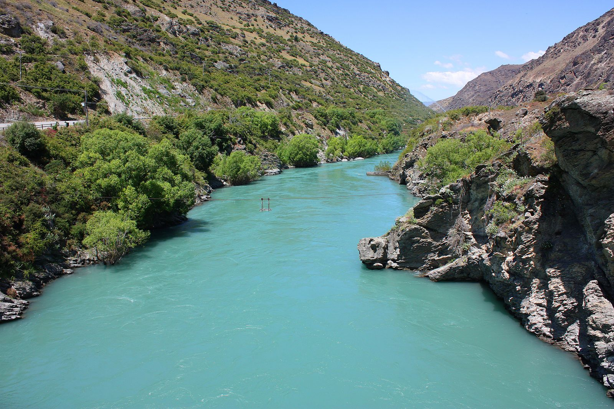
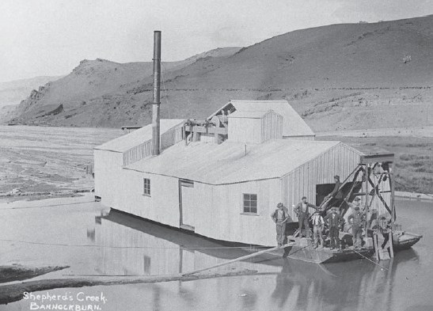
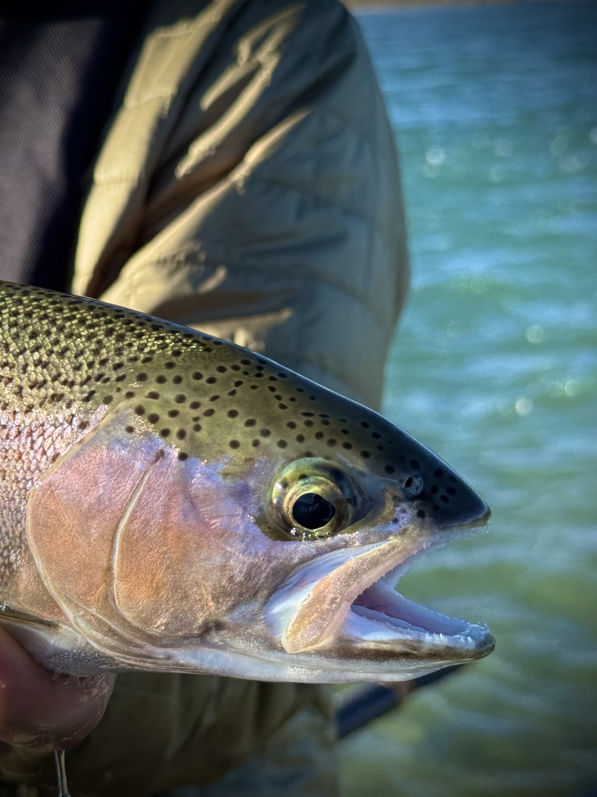
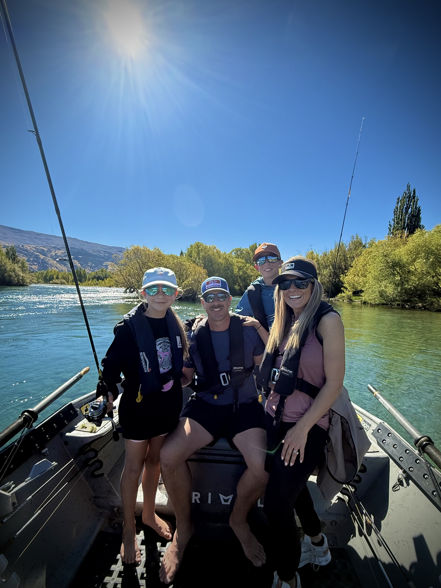
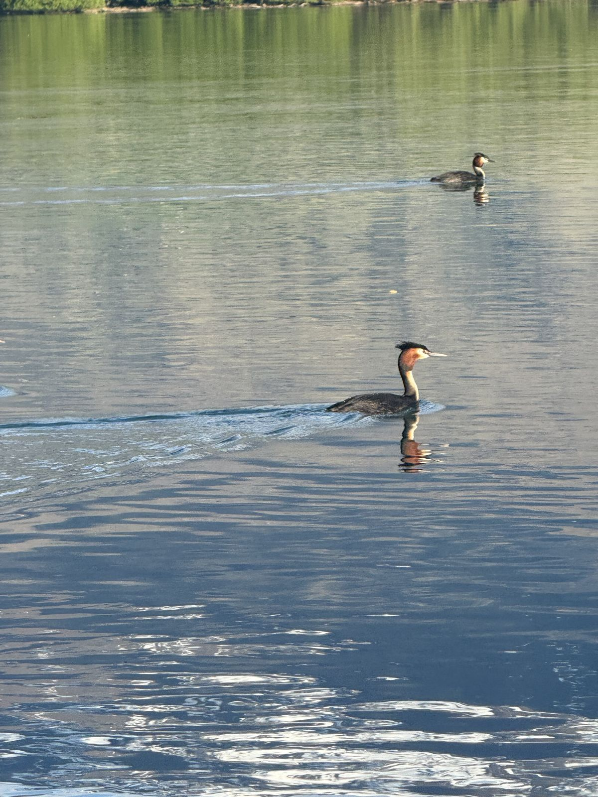

See the old gold workings
Take in the old gold workings from the water.
Fish or tour the lower Kawarau River.
On the lower Kawarau

Take in the old gold workings from the water.

Hear the story of the river and the people who worked it.

Spend your time on the water with a line in.

Your host
Roger is a long-term Bannockburn resident with an extensive knowledge of the area and its history. He is a senior member of the New Zealand Professional Fishing Guides Association and a certified skipper under Maritime New Zealand.
A host with your best day at heart, Roger will take you on a memorable journey through the area, with the angling experience only Central Otago scenery and an experienced local can provide.
Trip details
The boat
We operate a six-metre, outboard jet-powered, American-built drift boat, purpose-built for shallow braided rivers.


Before you come
All you need to bring is a hat, sunglasses and sunscreen. We can provide a picnic lunch and refreshments.
If you are going fishing, you need a current fishing licence.
Safety & standards
Both the boat and the skipper are Maritime New Zealand certified.
Senior member of the New Zealand Professional Fishing Guides Association.
Bookings
Call Roger to book a trip on the lower Kawarau, by the hour or by the day.
+64 21 436 870Where to find us